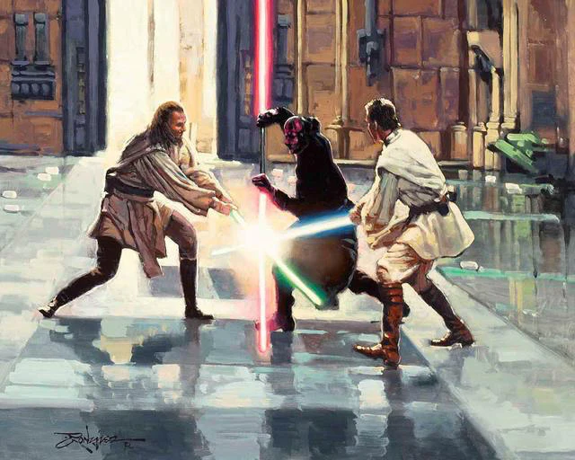
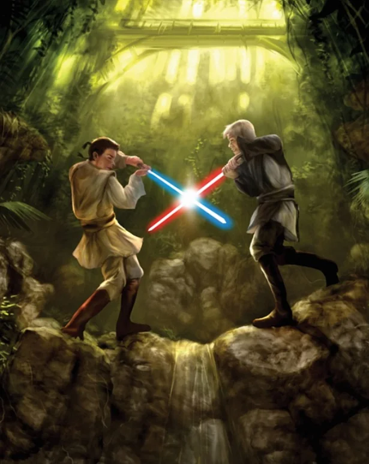
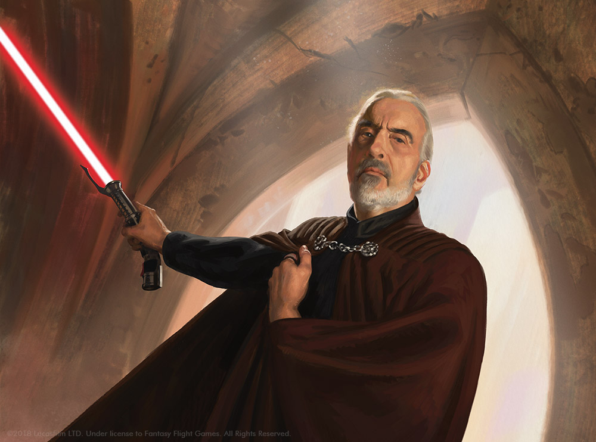
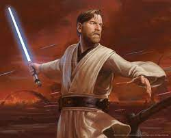
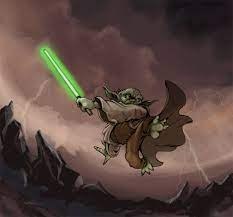
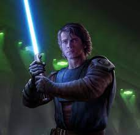
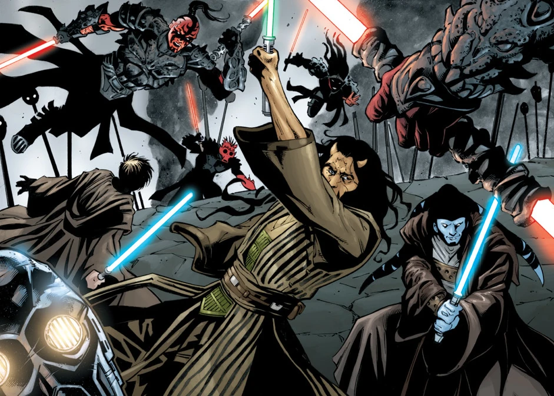
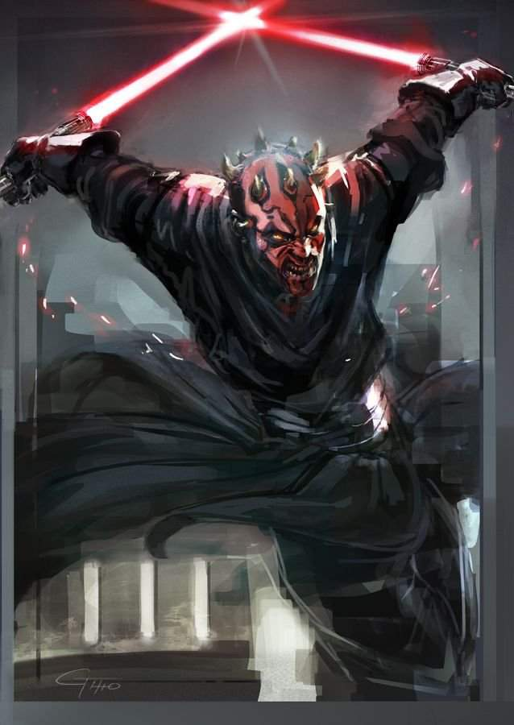
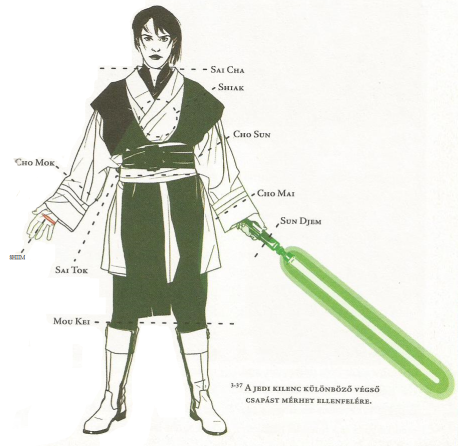

A Fénykard forgatása

Ha visszatekintünk a múltba, akkor észrevehető, hogy a vívás művészete mindig visszatükrözte a kor
filozófiáját. Alexandre Dumas muskétásai számára a vívás nem az ellenfél legyőzésének eszköze volt,
hanem a becsület megőrzését szolgálta, ami sok esetben fontosabb volt még a párbaj túlélésénél is. A
fegyelmezett japán szamurájok számára a kard nagy rituális jelentőséggel bírt, amíg a spanyol
kalózok szablyáikat henteskés módjára használták, ami visszatükrözi, hogy nem volt bennük semmi
tisztelet az emberi élet iránt. Tehát elmondhatjuk, hogy a vívásban, mint kulturális
kifejezőeszközben megnyilvánul a harcos személyisége is. Ugyanígy a Star Wars univerzumban, ahol
Jedik és Sithek párbajoznak ősi fegyvereikkel, a fénykardokkal. A laikusok számára egy
fénykardpárbaj pusztán zavaros fényfelvillanások kavalkádjának tűnik, de ha közelebbről
megvizsgálunk egy ilyen összecsapást, akkor fény derül a Jedi lovagok titkára. Ahhoz, hogy megértsük
ezeknek a harcosoknak a technikáját, meg kell, hogy ismerjük a Jedi fénykardpárbaj legendás Hét
Formájának történelmét...
A Hét Forma
A Jedik történelmének hajnalától, hét különböző vívóstílus alakult ki, amit összefoglaló néven Hét Forma-ként emlegetnek. A formák különböző harci stílusokat és
filozófiákat jelentetnek meg. Mindegyik formának megvan a maga előnye, és mint ahogy azt láthattuk a
Klónok támadása című filmben, mind a hét forma a mai napig használatos.
I. Forma: Shii-Cho - Sarlakk útja

Évezredekkel a Klónháborúk előtt, a fejlett ipari technológia felváltotta a fémből készült kardokat
energia sugarú fénykardokra. Ebből az átmenetből született meg az I. Forma. A Jedi mesterek az első
formát az ősi vívási hagyományokból alkották meg, mialatt a penge-penge elleni harc alapelve ugyanaz
maradt. A legegyszerűbb és legelemibb stílus, amelyet egy Jedi növendék megtanul. Ez az oka annak,
hogy a Shii-Cho jellegzetességei többé kevésbé minden Jedi és Sith stílusában felismerhetőek.
Az „elszánt stílus”, illetve a „sarlacc útja” néven is ismert forma az alapvető támadásokat és
hárításokat foglalja magában és a humanoidok testének célterületeire összpontosít: a bal és jobb
oldalra, a fejre és a lábakra. Nem számít, hogy tested gömbölyded, szelvényes vagy kígyószerű - ha
tudod használni a fénykardot, tökéletesen elsajátíthatod az első formát. Az első forma az alap, erre
épül az összes többi stílus. Nem ez a legmegfelelőbb a sugárnyalábok eltérítésére, sem a
fénykardpárbajokhoz, de ez a legmagasabb rendű mind közül, mert bármilyen helyzetben alkalmazható és
bármikor visszatérhetsz hozzá a csata hevében. Éppen ezért tanúbizonyságát kell tenned, hogy
tökélyre fejlesztetted az alkalmazását, mielőtt tovább lépnél.
A foglalkozásokon tempókat - gyors mozdulatsorokat - gyakorolsz majd egy ellenféllel szemben, amíg
valamelyikőtök meg nem adja magát. Ezekben a párbajokban hamar győzelmet lehet aratni egy
lefegyverző csapással, avagy shiimmel. Ennek lényege az, hogy olyan felületi
sebet ejtesz ellenfeleden, amelynek hatására elejti a fegyverét vagy átmenetileg lebénul valamelyik
végtagja. Mivel a gyakorlókard nem alkalmas egész testrészek
levágására, ezen a szinten ezt az egy úgynevezett végső csapást a tanulod
meg. A napi rendszerességű edzés másik fókuszpontja a gyakorlógömbök által kibocsátott sugárnyalábok
hárítása, ami egyben az ötödik forma alkalmazására is felkészít, ha erre a stílusra specializálódsz
majd.
A Jedi tanítványok mindig az I. Formával kezdik a tanulást.
II. Forma: Makashi - Ysalamiri útja

A klasszikus fénykardvívás második formája a makashi, amely „harcos forma”, valamint a Belső
Peremvidék egyik különös lénye után az „ysalamiri útja” néven is ismert. Amikor fénykard csap össze
a fénykarddal, ez a legkedveltebb stílus, egyben pedig a legelegánsabb is a hat klasszikus forma
közül.
A makashi a precíz csapásokat és a tökéletesen kiegyensúlyozott lábmunkát helyezi előtérbe. A
második forma gyakorlói lábaikat egymás előtt, egy vonalban vetik meg és ezen a vonalon támadnak,
illetve hátrálnak, kerülve a negyedik forma ugrásait és akrobatikus elemeit. Egykezes stílus lévén
hívei egyenletes súlyelosztású fénykardokat - köztük ívelt
markolatú modelleket - szeretnek használni.
A második forma sikeres alkalmazása esetén a párbaj gyorsan véget ér az ellenfél védelmének
áttörésével és a végső csapás bevitelével. A képzett bajvívók két befejezési
módban különösen járatosak. A sun djemhez folyamodva gyors körmozdulatokkal
vagy az ujjaira mért egyetlen, égési sérüléseket okozó csapással rövid idő alatt kiiktathatják a
másik fél fénykardját. A shiak egyenes szúrások és döfések sorozata, ami
logikusan következik a stílus által megkívánt alapállásból.
A második formában vívott párbajok tradíciója nagy tiszteletnek örvend a kardmesteri címet kiérdemlő
Jedik körében. Évközép Ünnepén ezek a mesterek esztendőről esztendőre bemutatót tartanak a többi
Jedinek a Templom külső udvarán. A tisztelgéssel és pengével leírt cikornyás mozdulattal induló
párbajok akkor érnek véget, ha minden kihívót lefegyvereztek vagy megadásra kényszerítettek.
Dooku gróf a II. Forma mestere volt.
III. Forma: Soresu - Mynok útja

A harmadik vívóstílus, mintegy válaszként lett kifejlesztve, a galaxisban teret hódító
lézerfegyverek elterjedésére. Amint ezek a fegyverek széleskörűen alkalmazásba kerültek a rossz fiúk
körében is, a Jediknek ki kellett találniuk egy egyedülálló vívási technikát önmaguk
megvédelmezésére. A III. Forma tehát a lézersugarak kivédésének gyakorlatából alakult ki. Az
évszázadok során ez az eredet az erősen kifinomult agresszivitásmentes Jedi filozófia kifejező
eszközévé magasztosult. A III. Forma, maximálissá teszi a defenzív védekezést, jellemző
stílusjegyeivel, a rövid és hatékony mozdulatsorozatokkal, amik minimális testfelületet hagynak
szabadon, összehasonlítva ezt a többi, relatív nyílt formával.
A „rugalmas forma” és a „mynock útja” néven is ismert harmadik forma, a soresu a tökélyre
fejlesztett önvédelem megtestesülése - mestereiről pedig úgy tartják, hogy semmiféle támadás nem fog
ki rajtuk.
A harmadik formát választó padavanoknak azt tanácsolják, hogy gyakorolják a meditációt, ugyanis a
hét stílus közül a soresu követeli meg a leginkább, hogy befelé koncentráljunk. Miközben körülöttünk
dühöngenek az ellenfelek, mi a vihar szemévé válunk.
A harmadik forma a legideálisabb a sugárvetővel leadott lövések hárítására és igen elterjedt a
Felderítő Testület tagjai, valamint a Peremvidékén szolgálók körében. Egy magányos Jedi akár egy
húsz fős, sugárfegyverekkel felszerelkezett martalóccsapattal is képes dacolni, ha mozgó meditációba
merül, ugyanis a megvilágosodott állapotot kihasználva nemcsak az ellenfelek pozícióját érzékeli,
hanem azt is, hogy milyen mozdulatok szükségesek az összes sugárnyaláb elterítéséhez. Mivel azonban
ez a technika - az Oltalmazó Kör - egy prekongitív módszer, huzamosabb ideig tartó alkalmazása
hosszú távú víziókra is nyitottá teheti a Jedi elméjét. Éppen ezért amikor csak egyvalaki támad ránk
sugárvetővel, egyetlen hárító suhintás javasolt. Így befogható és eltéríthető a lövés és lehetőség
nyílik rá, hogy előrenyomuljunk, mielőtt az ellenfél újra tüzelne. A sugárnyalábok vissza is
fordíthatók ugyanabba az irányba, ahonnan érkeznek, de az ehhez szükséges precíz mozdulat gyakrabban
jelenik meg az ötödik formában.
Ha kardforgató ellenféllel szemben alkalmazzuk a harmadik formát, szorítkozzunk szűk mozdulatokra a
széles suhintásokkal és kitörésekkel pedig spóroljunk. Így erős védőburkot alakítunk ki magunk
körül, amely megnehezíti a másik fél számára, hogy lecsúszó találatoknál többet érjen el. Ezzel
természetesen az is együtt jár, hogy a harmadik forma mestere nem tud ellentámadást indítani - a
minimalista védekezéssel azonban tartalékolja energiáit, miközben ellenfelét kifárasztja, így az
kimerültségében végül hibát követ el, lehetőséget adva a győzelemre.
Obi Wan kitartott a védekező III. Forma mellett egészen a haláláig.
IV. Forma: Ataru - A sólyomdenevér útja

A legakrobatikusabb vívásmód, amely erősen kihangsúlyozza a Jedik futáshoz, ugráshoz és forgáshoz
szükséges képességeit az Erő rendkívüli módon való alkalmazásával. A negyedik forma mesterei magukba
foglalják mindazon képességeket, amik az Erő segítségével fizikai képességük határáig
teljesíthetőek. A negyedik forma Jedi mestereinek fénykard párbaja bámulatba ejti a külső szemlélőt.
A gondosan kidolgozott mozgások középpontjában álló Jedi, méltó ellenfele bárkinek. Agresszív és
nyitott védelem felé hajló technika.
Az ataru a negyedik a Templomban tanított formák közül. Ismert „agresszív forma”, illetve a
„sólyomdenevér útja” néven is és a hozzá tartozó energikus mozdulatok valóba azt követelik
alkalmazójától, hogy folyamatosan támadjon. A padavanok számára nem gyakran tanítják, ők ugyanis
fiatalos energiájuktól fűtve gyakran hanyagul hajtják végre a szükséges mozdulatokat. A kívülállónak
a negyedik forma kitörések és ugrások összemosódó sorának tűnik. Ezt az akrobatikus stílust az
alkalmazza a legjobban, aki hatékonyan növeli sebességét és állóképességét az Erő segítségével, de
még így is kimerítő, ezért célszerű gyors, megsemmisítő támadásokra használni. Ha több próbálkozás
után sem jutsz át ellenfeled védelmén, tanácsos visszavonulni, mert nem valószínű, hogy győzhetsz.
A negyedik forma igazán csak egy ellenféllel szemben hatékony. Ha többekkel küzdesz, legalább a
védekezés látszatát fenn kell tartani, ezért amennyiben nem vagy igazi mestere az atarunak, tanácsos
váltani a hatodik formára.
Yoda, aki a minden tárgyat és élőlényt átszövő Erőben hitt, szintén ennek a formának a mestere volt,
csakúgy, mint Qui-Gon Jinn.
V. Forma: Shien/Djem Tso - Krayt sárkány útja

Azokban a zavaros időkben, amikor a Jediknek egyre nehezebbé vált a béke fenntartása a galaxisban,
fejlődött ki, ez a IV. Formánál erőszakosabb és erőteljesebb vívásmód. Azok a Jedi mesterek, akik a
III. Formát túl passzívnak találták, fejlesztették ki az V. Formát. A III. Forma mesterei lehettek
ugyan legyőzhetetlenek, de ők sem voltak képes ellenfeleit legyőzni egy pusztán védekezésre
használható vívóstílussal. Az V. Forma az erőteljességre és a fénykarddal való támadás mozdulataira
koncentrál. Ez a stílus, kihasználja a fénykardnak azt a lehetőségét, amivel kézifegyverekből kilőtt
energiasugarat képes blokkolni, majd visszaverni az ellenfél irányába. Filozófiája, az ellenség
legyőzéséhez szükséges erő és hatalom birtoklása, amit a Jedik közül néhányan úgy határoznak meg,
hogy „a béke fenntartásához szükséges felsőbbrendű Erő”. Némely Jedi lovagnak az V. Forma testesíti
meg a mindenfajta fenyegetés ellen alkalmazható, méltó vívóstílust, más Jedi lovagok viszont úgy
gondolják, hogy szükségtelenül kísérti bennük a Sötét Oldal másokon való uralkodásának hajlamát.
Az ötödik tradicionális stílus „kitartó forma” és „krayt sárkány útja” néven ismert. Gyakorlói
mindkét aspektusát, a shient és a djem sót is tökélyre fejleszthetik, de a Jedik többsége
valamelyiket ugyanúgy előnyben részesíti, ahogy a legtöbbjük azt is meg tudja mondani, melyik a
domináns keze, amellyel szívesebben forgatja a fénykardját.
Fizikai igénybevétel szempontjából az ötödik forma legmegterhelőbb. Míg a negyedikhez gyorsnak és
mozgékonynak, ehhez erősnek kell lenni. Ha valakinek nincsenek meg a testi adottságai ahhoz, hogy
ellenfele fölé kerekedjen, nem érdemes ezt a stílust tanulnia. A nagytermetű és impozáns izomzattal
rendelkező Jediknek ellenben kifejezetten javasolt az ötödik formára koncentrálni, főként azért,
mert nem kell annyira fürgének lenni hozzá, mint a többihez.
Ezt a stílust olyan Jedi mesterek hívták életre, akik úgy vélték, hogy a harmadik forma nem kínál
elég lehetőséget az ellentámadásra. Ebből az elgondolásból kiindulva alkották meg a shient, amellyel
nem csak háríthatjuk a sugárnyalábokat, hanem vissza is fordíthatjuk őket tetszőleges irányba, hogy
semlegesítsük a támadókat vagy más célpontokat.
A djem so alapelve is az ellenfél támadásának önmaga ellen fordítása, de ezt a technikát fénykard a
fénykard elleni párbajokra optimalizálták. Mivel az ellenféllel szembeni erőfölényre épít, az ötödik
formát a Jedik egyes korszakokban elfogadhatatlannak tartották. Akik azonban képesek egyensúlyt
teremteni a stílus megfélemlítő elemei és az Erő könyörületes használata között, azok akár saját
kardmestereiken is felülkerekedhetnek vele.
A klónháború kezdetekor Anakin hatalomvágyától elvakítva az V. Forma mellett kötelezi el magát.
VI. Forma: Niman - Rankor útja

Palpatine kancellársága alatt a VI. Forma az érvényben lévő Jedi fénykard képzések standardja. Ez a
stílus az eddig említett irányzatokat részben ötvözi és egyensúlyba tartja, mérsékelve azokat, úgy,
hogy a középpontba a harmóniát és az igazságosságot helyezi, elutasítva a másokon való uralkodás
hatalmát. A VI. Forma az I., III., IV. és az V. Forma tulajdonságait ötvözi. Fiatal Jedik az első
éveik alatt az I. Formát tanulmányozzák és azután egy-két évet töltenek el mindegyik stílus
megismerésével mielőtt befejezik kiképzésüket. Összehasonlításul, egy olyan Jedi, aki a VI. Forma
mestere, minimum 10 évig kell, hogy gyakorolja és tanulmányozza ezt a stílust, miután befejezte az
I. Forma alapképzését. A VI. Forma jól passzol a modern Jedi galaxisban betöltött szerepéhez, amiben
a lovag ugyanúgy a harcművészetben, mint a politikai színterén otthonosan mozog. Mindezek ellenére a
többi Forma legképzettebb mesterei, szükségtelenül megerőltetőnek tartják ezt a stílust.
A „mértékletes forma”, illetve a „rankor útja” néven is ismert niman a hatodik tradicionális
fénykardívási stílus. A mindennapokban „diplomataformaként” emlegetik, ugyan is ez a legkedveltebb a
Jedi konzulok körében, akik nem a harcra építik karrierjüket.
A hatodik forma a legkiegyensúlyozottabb stílus. Nem annyira precíz, mint a második nem annyira
defenzív, mint a harmadik, nem annyira energikus, mint a negyedik, nem annyira legtaglózó, mint az
ötödik, de mindegyikből merít, így pedig egy olyan hibrid forma jön létre, amelynek legfőbb
jellemzője az, hogy praktikus.
Sok kardmester vélekedik úgy, hogy a niman nem követel eleget alkalmazóitól és egy gyakorlott
második forma-használó legyőzése valóban csaknem lehetetlen feladat a hatodik forma híveinek. Ettől
még azonban a stílus hasznos, ha például bűnözőkön vagy gengsztereken kell felülkerekedni, így az
idejük jelentős részét a tanulásnak és a békefenntartásnak szentelő Jedi konzulok számára ideális,
hiszen könnyen elsajátítható.
A pengehasználatra fordított mérsékelt figyelmet kompenzálandó a hatodik formában javasolt beépíteni
a küzdelembe az Erő-képességeket is. Amennyiben ezeket a módszereket megfelelően használja, a
hatodik forma mestere képes lehet arra is, hogy egy egész csapatnyi ellenfelet az irányítása alá
vonjon és egyenként bánjon el velük.
A két pengével küzdők is a niman művelői. Ha bevetsz egy második kardot, választhatod a rövid
pengéjével nagyobb mozgásteret engedő shotót is.
VII. Forma: Juyo - Vornsk útja

A legmagasabb szintű stílusnak tartott VII. Formát csak azok a Jedi mesterek képesek kontrollálni,
akik egyszerre több különböző formának a mesterei is egyben. Ez a legbonyolultabb és legtöbbet
kívánó stílus, de elsajátítói fantasztikus erőt és képességeket szerezhetnek vele. A VII. Forma
nagyfokú bátorságot és határozott, pontos mozdulatokat igényel. Nyíltabb és mozgékonyabb, mint az V.
Forma, de mozgástanilag nem annyira aprólékosan kidolgozott, mint a IV. Forma. Hozzáadva a nagyon
fejlett Erő segítségével végrehajtott ugrásokat és mozdulatokat, a VII. Forma taktikája legázolja az
ellenfelet a látszólag összefüggéstelen, nagyon gyors mozdulat sorozatokkal, ezzel
kiszámíthatatlanná téve a Jedi taktikáját a harcban. Ez a jellegzetesség sokkal bonyolultabb
kivitelezését tekintve, mint a IV. Forma kecsesen összekapcsolt mozdulatai. A VII. Forma megkívánja
az V. Forma intenzitását, de sokkal nagyobb energiát igényel a szélesebb sávban kiterjesztett,
aprólékosabb összpontosítás miatt. Ez a stílus még az V. Forma érzelemvilágától is mélyebbre hatol,
mesterei még tökéletesebbek. A VII. Forma képviselőinek nyugodt külseje egy pattanásig feszült belső
erőt rejt. A VII. Forma mind a mai napig nem teljesen ismert mivel keveseknek adatik meg, hogy
eljussanak ilyen magas szintre.
A juyo évezredek óta létezik, mégis a legellentmondásosabb az összes forma közül és a Jedik
többségének nincs is szüksége rá, hogy elsajátítsa. A juyo beceneve a „vornskr útja”, de véleményem
szerint jól a másik neve, a „kegyetlen forma” jellemzi.
A kíméletlen és kiszámíthatatlan hetedik formát használó Jedit kordában tartott szenvedélyei
irányítják, amikor támad. A Rend berkeiben ez az aspektus okozza a legnagyobb döbbenetet, hiszen a
juyo szakszerű alkalmazásával látszólag megsértjük a Kódex egyik alapelvét: Nincsenek érzelmek, béke
van.
A hetedik forma értői azonban nem vakon adják át magukat az érzelmeiknek, hanem belső vívódásaikat
egyfajta mentális kohóba csatornázva hozzák létre a nyers és dühödt csapásaik erejét adó
szenvedélyt. Az igazi mester érzéseit ebbe a kohóba zárva őrzi - a forma kevésbé tapasztalt
gyakorlóival viszont valóban megeshet, hogy szabadon engedik őket a csata közben, ami megmérgezi a
szándékaikat és a sötét oldalra vezető dühöt ébreszt bennük. Éppen ezért a Tanács a juyo
elsajátítását csak korlátozottan engedélyezi. Mindössze néhány tanítványt fogadnak évente.
A hetedik formát nehéz megtanulni. Mozdulatai élesek, kaotikusak és gyors kitörésekben kell
végrehajtani őket. Ettől függetlenül a szekvenciák elsajátíthatók a hagyományos módon, egyszerű
gyakorlással, de amíg nem hagyod, hogy az izgatottság, a szenvedély és a düh is átjárja a tetteidet,
valójában nem a juyót alkalmazod.
Darth Maul a VII. Forma mestere.
Az utolsó csapások

A fénykardpárbaj akkor ér végét, ha az ellenfél harcképtelenné vált, halott vagy megadásra
kényszerült. Ahhoz hogy ezt elérjük, végső csapást kell bevinnünk. A végső csapásokat szánt
szándékkal és az áldozat életének megkímélésére törekedve kell végrehajtani, hacsak a körülmények
nem kényszerítenek arra, hogy halálra sújtsuk támadónkat.
-
A két alapvető végső csapás közé tartozó shiimet a penge szélével
kell bevinni. Általában csak felületi sérüléseket okoz, de ha lehetőség kínálkozik rá, gyorsan
meg kell ragadni.
-
A másik alapvető csapás, a shiak a penge hegyével
nyársalja fel az ellenfelet. Ez a precizitása miatt kedvelt módszer jelzi, hogy a pengét te
irányítod, téged pedig az Erő.
-
Ahogy a második forma ismertetésében már olvashattad, a sun
djemmel megsemmisítheted ellenfeled fénykardját vagy kikényszerítheted, hogy elejtse
a fegyverét.
-
A cho mai direktebb módszer: a kifejezés a fegyverforgató kéz
levágását takarja. Az ellenfél életben marad, de harcképtelenné válik, így könyörületesen zárul
a csata.
-
A chu sun az egész fegyverforgató kar lemetszése, a legtöbb
humanoid faj esetében valahol a könyök fölött. Noha nem olyan precíz csapás, mint a cho mai,
ugyanolyan gyorsan véget vet a küzdelemnek.
-
A cho mok valamely más végtag, például az egyik láb leválasztása.
Ennyire csak akkor szabad megcsonkítani az ellenfelet, ha kínálja magát a lehetőség és úgy
látod, hogy másképp nem nyerheted meg az összecsapást.
-
A mou kei tiltott variáns. Neve szó szerinti fordításban
„csonkolást” jelent és több végtag egy mozdulattal történő levágását jelöli. Mivel számos
alternatíva áll rendelkezésre, a mou kei használata élő ellenféllel szemben sosem lehet
indokolt.
-
A sai cha az ellenfél lefejezése. Egy Jedinek sosem állhat
szándékában kioltani mások életét, hiszen még a leghitványabbak is ragyogó fénylényként léteznek
az Erő melegében, de ha muszáj a fénykarddal ölni is lehet. Amennyiben a szívet célzó shiak
döfésre nincs lehetőség ez a halálos csapás ajánlott.
-
A sai tok a test kettévágása. Teljes joggal nevezik barbár
cselekedetnek és a sötét oldal csábító düh bizonyítékának. Hacsak nem droidokkal harcol,
egyetlen tanítvány sem használhatja a sai tokot soha.